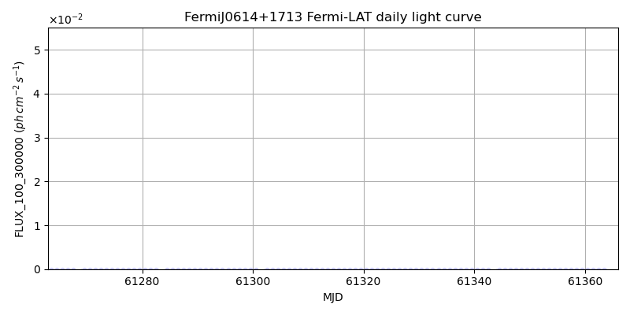
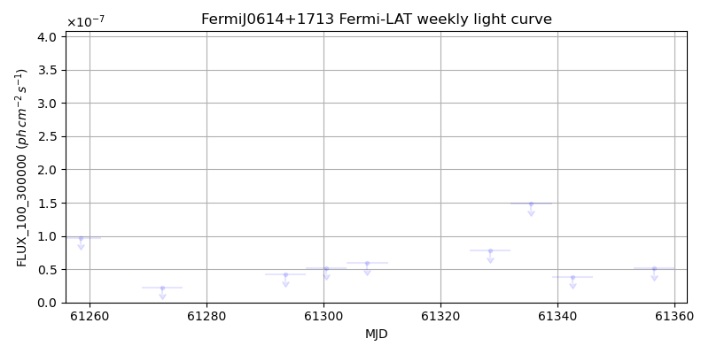
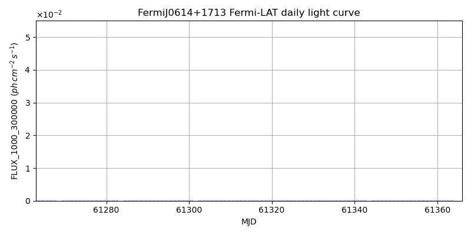

LAT Lightcurve site: https://fermi.gsfc.nasa.gov/ssc/data/access/lat/msl_lc/source/Fermi_J0614p1713
NED: Query
Time of last update of this page: UT: 2026-11-28 16:17 (MJD: 61372.679)
| Property | Value |
|---|---|
| R.A. | 6:14:31.20 |
| Dec. | 17:13:48.0 |
| z | 0.000 |
| 3FGL SpectrumType | |
| 3FGL PL Index | -1.00 |
| 3FGL Flux_100_300000 | -1.00e+00 |
| 3FGL Flux_1000_300000 | -1.00e+00 |
| 3FGL Flux >200 GeV | -1.00e+00 |
| 3FGL Extrap. Crab >200 GeV | -1.00 |
| 3FGL Flux After EBL Absorption >200GeV | -1.00e+00 |
| 3FGL EBL Crab Fraction >200GeV | -1.00 |

| MJD | dMJD | Flux | dFlux | Frac3FGL | FracCrab>200GeV | EBLFracCrab>200GeV |
|---|---|---|---|---|---|---|
| 61366.50 | 0.50 | 1.43e-06 | 0.00e+00 | 0.00 | 0.00 | -0.00 |
| 61367.50 | 0.50 | 1.39e-06 | 0.00e+00 | 0.00 | 0.00 | -0.00 |
| 61369.50 | 0.50 | 1.05e-06 | 0.00e+00 | 0.00 | 0.00 | -0.00 |
| 61370.50 | 0.50 | 1.65e-06 | 0.00e+00 | 0.00 | 0.00 | -0.00 |
| 61371.50 | 0.50 | 6.62e-07 | 0.00e+00 | 0.00 | 0.00 | -0.00 |

| MJD | dMJD | Flux | dFlux | Frac3FGL | FracCrab>200GeV | EBLFracCrab>200GeV |
|---|---|---|---|---|---|---|
| 61328.50 | 3.50 | 7.82e-08 | 0.00e+00 | 0.00 | 0.00 | -0.00 |
| 61335.50 | 3.50 | 1.48e-07 | 0.00e+00 | 0.00 | 0.00 | -0.00 |
| 61342.50 | 3.50 | 3.85e-08 | 0.00e+00 | 0.00 | 0.00 | -0.00 |
| 61356.50 | 3.50 | 5.10e-08 | 0.00e+00 | 0.00 | 0.00 | -0.00 |
| 61363.50 | 3.50 | 1.65e-07 | 0.00e+00 | 0.00 | 0.00 | -0.00 |

| MJD | dMJD | Flux | dFlux | Frac3FGL | FracCrab>200GeV | EBLFracCrab>200GeV |
|---|---|---|---|---|---|---|
| 61366.50 | 0.50 | 3.10e-07 | 0.00e+00 | 0.00 | 0.00 | -0.00 |
| 61367.50 | 0.50 | 3.12e-07 | 0.00e+00 | 0.00 | 0.00 | -0.00 |
| 61369.50 | 0.50 | 8.51e-08 | 0.00e+00 | 0.00 | 0.00 | -0.00 |
| 61370.50 | 0.50 | 1.16e-07 | 0.00e+00 | 0.00 | 0.00 | -0.00 |
| 61371.50 | 0.50 | 1.29e-07 | 0.00e+00 | 0.00 | 0.00 | -0.00 |
| MJD | dMJD | Flux | dFlux | Frac3FGL | FracCrab>200GeV | EBLFracCrab>200GeV |
|---|---|---|---|---|---|---|
| 61328.50 | 3.50 | 7.55e-09 | 0.00e+00 | 0.00 | 0.00 | -0.00 |
| 61335.50 | 3.50 | 4.97e-09 | 0.00e+00 | 0.00 | 0.00 | -0.00 |
| 61342.50 | 3.50 | 8.11e-09 | 0.00e+00 | 0.00 | 0.00 | -0.00 |
| 61356.50 | 3.50 | 4.43e-09 | 0.00e+00 | 0.00 | 0.00 | -0.00 |
| 61363.50 | 3.50 | 1.74e-08 | 0.00e+00 | 0.00 | 0.00 | -0.00 |
--------------------------------------------------------- Using user-supplied coords: 6:14:31.20 17:13:48.0 2000 --------------------------------------------------------- FLWO UT night of: 2026-11-29 Local Sid. @ Midnight: 04:08 Sunset (-15.0) (local, UT): 18:31 01:31 Sunrise (-15.0) (local, UT): 05:53 12:53 Moonrise (local, UT): 21:57 04:57 Moonset (local, UT): Moon phase: 0.72 --------------------------------------------------------- AzTime LSID UT Obj_el Obj_az Mn_el Mn_az Sep. --------------------------------------------------------- 18:31 22:39 01:31 -10.2 62.3 -32.9 32.1 35.8 19:01 23:09 02:01 -3.0 66.6 -29.4 38.9 36.2 19:31 23:39 02:31 1.8 70.6 -25.4 45.0 36.6 20:01 00:09 03:01 7.7 74.4 -21.0 50.6 37.0 20:31 00:39 03:31 13.9 78.1 -16.2 55.6 37.3 21:01 01:09 04:01 20.2 81.7 -11.1 60.2 37.6 21:31 01:39 04:31 26.5 85.3 -5.4 64.5 38.0 22:01 02:09 05:01 32.9 89.1 0.4 68.5 38.3 22:31 02:39 05:31 39.3 93.2 5.8 72.2 38.6 23:01 03:10 06:01 45.6 97.7 11.6 75.8 38.9 23:31 03:40 06:31 51.9 102.9 17.5 79.4 39.1 00:01 04:10 07:01 58.1 109.4 23.6 82.9 39.4 00:31 04:40 07:31 63.9 118.0 29.7 86.5 39.6 01:01 05:10 08:01 69.3 130.3 35.8 90.3 39.9 01:31 05:40 08:31 73.4 148.7 42.0 94.4 40.1 02:01 06:10 09:01 75.5 174.7 48.1 99.1 40.3 02:31 06:40 09:31 74.5 202.5 54.2 104.7 40.5 03:01 07:10 10:01 71.0 223.8 60.1 111.7 40.7 03:31 07:40 10:31 66.0 238.0 65.6 121.1 40.9 04:01 08:10 11:01 60.3 247.7 70.5 134.7 41.1 04:31 08:40 11:31 54.2 254.9 74.0 154.7 41.3 05:01 09:11 12:01 48.0 260.5 75.2 181.1 41.4 05:31 09:41 12:31 41.6 265.2 73.6 206.8 41.6 05:53 10:02 12:53 37.0 268.3 71.0 221.2 41.8 --------------------------------------------------------- Dark hours >55 deg.: 0.00